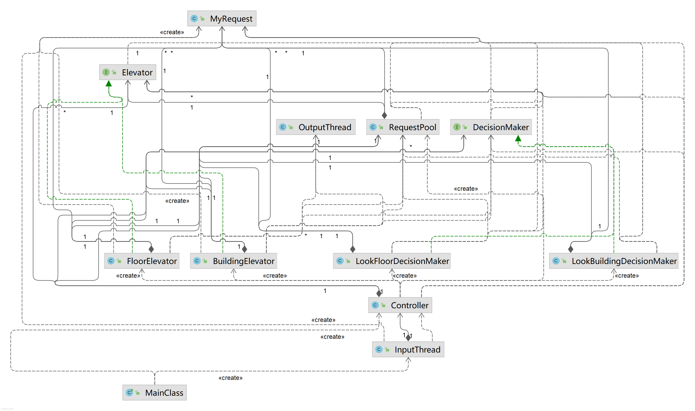
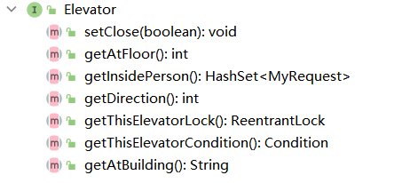
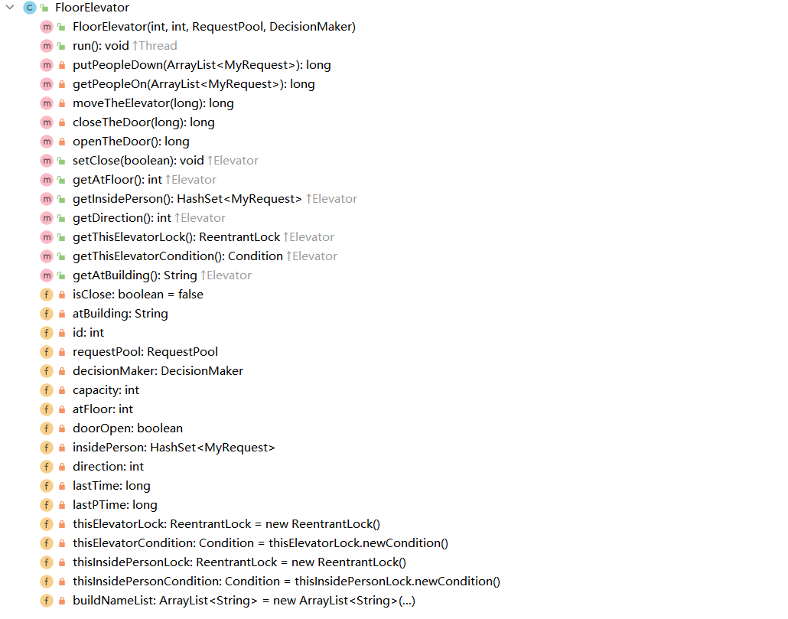
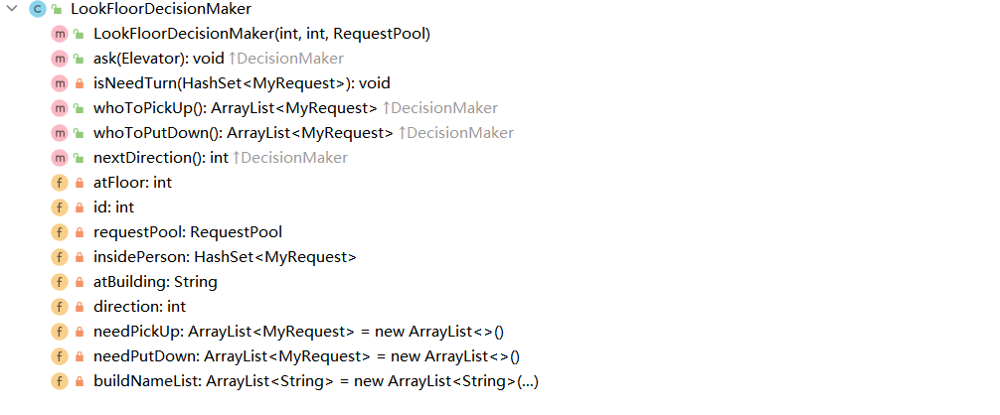
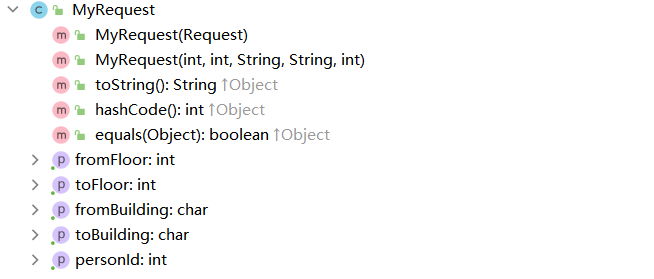
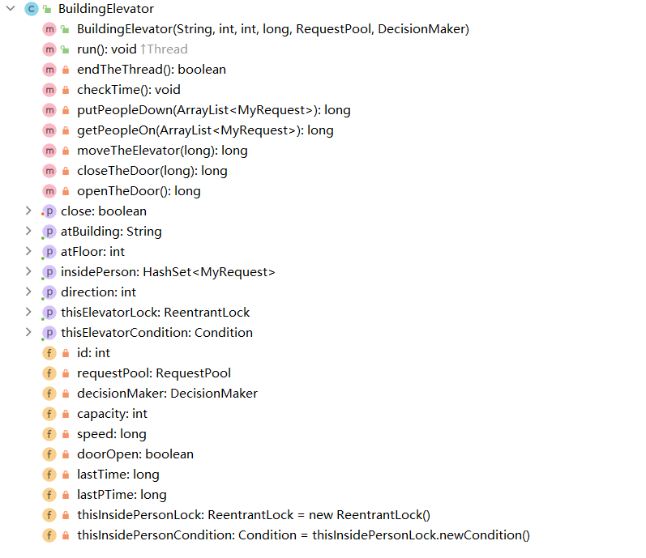
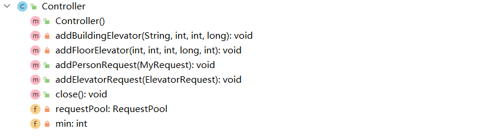
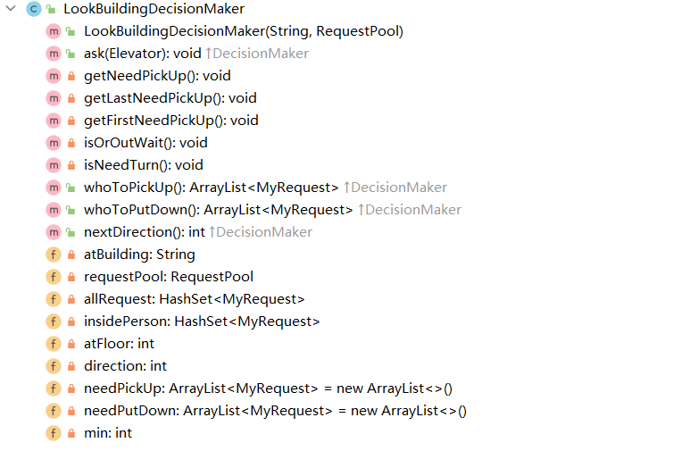
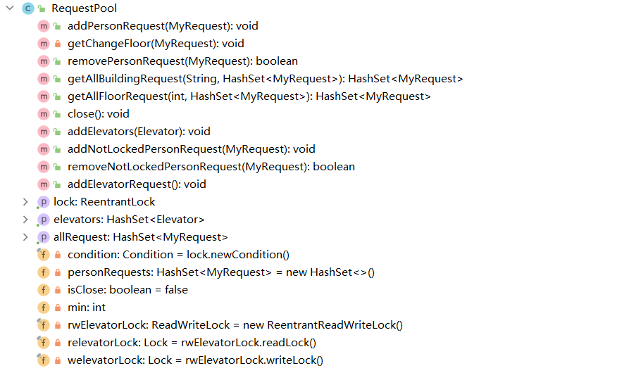

面向对象设计与构造第二单元第二次作业
多线程实时电梯系统
题目
分析
本次作业在第一次的基础之上增加了横向电梯以及同楼层/楼座的多台电梯的需求
本单元虽然新增横向电梯，但是在本单元的要求中不会同时出现跨楼层/跨楼座的请求，即乘客与第一次作业一样只需乘坐一趟电梯就可以到达目的地，因此，横向电梯在本单元中与纵向电梯本质上是一样的
根据第一次作业留下的可拓展接口进行迭代开发
需求变更
新增内容:
横向电梯（环形电梯）：
- 新增楼座与楼座之间移动的环形电梯，每个楼层可以对应多台环形电梯，可以在 $A\rightarrow B \rightarrow C \rightarrow D \rightarrow E \rightarrow A$ 或者 $A\rightarrow E \rightarrow D \rightarrow C \rightarrow B \rightarrow A$ 所组成的回路之间运行，例如，位于$A$ 座 $2$ 楼的横向电梯可以直接运行到 $B$ 座 $2$ 楼 $/$ $E$ 座 $2$ 楼
纵向乘客请求
- 可以输入相同楼层但是不同楼座的乘客请求
动态增加电梯
- 可以输入新增电梯指令，在对应楼座/楼层加入一台电梯
数据限制变更:
乘客请求：
- 单楼座输入 $\rightarrow$ 输入保证 [起点座 == 终点座] + [起点层 == 终点层] == 1，即 楼座和楼层两者中有且仅有一个相同 ，换言之，乘客一次只能在同一层楼或者同一座楼移动，从 A 座 1 层到 C 座 3 层是不被允许的（本次作业中）
电梯移动速度：
- 横向电梯移动一座花费的时间：0.2s
迭代开发
总UML类图：

新增：
电梯接口
Elevator
由于本次作业新增了一种电梯（横向电梯），横向电梯与纵向电梯本质上都是一种电梯，只不过在一些具体的方法和行为上有所区别，因此可以让这两种电梯实现一个公共的电梯接口，实现了面向对象思维
接口方法：
getAtFloor，getDirection，getAtBuilding，getInsidePerson： 获得电梯该时刻状态信息的方法getThisElevatorLock，getThisElevatorCondition： 获取电梯方法Lock以及对应Condition的方法setClose： 线程需要关闭的标志位，该位置高则代表此电梯可以终止自身线程
横向电梯类
FloorElevator
- 实现
Elevator接口，继承Thread类，内部实现逻辑大体与横向电梯显示，对外方法也基本相同，重写的run方法亦封装了顺序执行下客->上客->关门->运行一层的流程，只是从所处楼层：1 ~ 10转变为了所处楼座：A ~ E，
- 实现
横向电梯策略类
LookFloorDecisionMaker
该类为横向电梯的根据
LOOK算法修改的适用于横向电梯的算法修改内容：
空等条件： 该楼层无乘客请求
转向条件： 电梯内部人数为零，该楼层电梯运行方向（顺时针 / 逆时针）上的下两座楼没有乘客请求，且本楼座没有该运行方向上的请求，则转向
接人条件： 接取电梯当前楼座的 所有 横向运动请求
下客条件： 所有到达楼座为当前楼座的请求
乘客请求类（重写）
MyRequest
- 相当于重写了官方
PersonRequest类中的所有对外接口，并且新增了一个构造方法，以支持在程序内部而非标准输入中的乘客请求的添加
- 相当于重写了官方
修改：
纵向电梯类
BuildingElevator
线程终止条件变更，适用于当前输入和处理
增加操作内部人员（InsidePerson）锁，因为在本次迭代中有可能外部类要访问该电梯的内部人员信息，加锁以保证线程安全性
新增不包含上锁操作的添加请求和获取所有请求的方法
控制器类
Controller
- 新增添加电梯的处理方法
addElevatorRequest，判断是新增楼座电梯还是新增楼层电梯并且调用自身的两个对应新增电梯方法：addFloorElevator和addBuildingElevator以加入不同类的电梯进入电梯池中
- 新增添加电梯的处理方法
纵向电梯策略类
LookBuildingDecisionMaker
- 优化：优先接取在电梯运行方向上距离当前楼层最远乘客
- 优化：在
1的优化条件下，优先接取同目的地乘客
- 优化：在
请求池类
RequestPool
新增
getAllFloorRequest方法以响应横向电梯的ask()方法，并且设定横向电梯的wait条件增加增加电梯和访问电梯方法
addElevators和getElevators，并且对电梯池进行加elevatorLock读写锁以避免线程不安全问题增加不加锁的从请求池添加$/$移除请求的方法
addNotLockedPersonRequest和removeNotLockedPersonRequest以便保证加锁的顺序，防止死锁问题的出现
by Tan